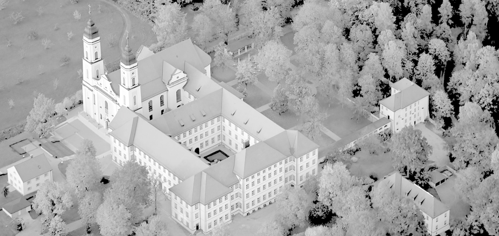

Finite Geometries 2022
Sixth Irsee Conference

28 August - 3 September 2022, Irsee, Germany
Organisers: Ilaria Cardinali, Michel Lavrauw, Klaus Metsch, Alexander Pott
Invited speakers
About this conference
- Conference topics:
Combinatorial structures in Galois geometries;
Finite Incidence Geometry; Algebraic curves and varieties over finite fields; Geometric and algebraic coding theory; Finite groups and geometries; Algebraic design theory.
- This conference extends the series of previous meetings which took place at the Isle of Thorns (2000), in Oberwolfach (2001), and in Irsee since 2003.
Schedule
- The first talk starts on Monday morning at 9:30. The last talk ends on Friday afternoon at 18:00. There are no talks on Wednesday afternoon. There is a reception on Monday evening and a concert on Tuesday. The conference dinner is on Friday evening.
- The full schedule can be found here, and in the book of abstracts.
Book of abstracts
- The book of abstracts contains the abstracts of invited and contributed talks, as well as the schedule and the list of participants. Participants will receive a printed copy at the start of the conference.
Special Issue in Designs Codes and Cryptography
- As with the previous editions, there will be a special issue on Finite Geometries in the journal Designs Codes and Cryptography. Papers related to the conference topics can be submitted using the online submission system of the journal (selecting the special issue Finite Geometries 2022). Deadline for submission is 30 November 2022.
Practical info
- The conference venue is the Irsee Monastery.
- Participation in this conference is by invitation only. All participants may submit an abstract for a contributed talk on some aspect of their research related to the main topics of the conference.
- Sunday 28 August: check-in at 15:00, registration 17:00-19:00, and dinner 19:00-21:00.
Talks
Conference photo
- The conference photo can be found here.
- Please send all correspondence, other than the abstract, to the following conference email address: irsee6@ovgu.de
- In case of emergency, please contact Alex (+49 177 2375622) or Klaus (+49 151 64810043)
{kind=link}